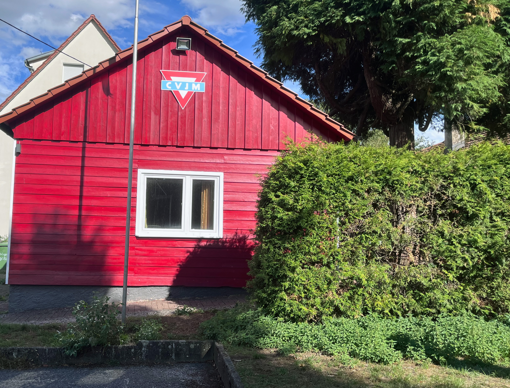

2017
Der Anfang
Die Geschichte der Illinger Igel beginnt mit gemeinsamen Dartabenden und der Idee, eigene Steeldartturniere in Illingen zu organisieren. Daraus entwickelte sich über die Jahre eine feste Gemeinschaft.
DC Illinger Igel 26 e.V.
Aus einer gewachsenen Dartgemeinschaft wurde 2026 ein eingetragener Verein mit dem Ziel, Steeldarts in Illingen dauerhaft zu fördern.
Unsere Geschichte
Die Geschichte der Illinger Igel beginnt mit gemeinsamen Dartabenden und der Idee, eigene Steeldartturniere in Illingen zu organisieren. Daraus entwickelte sich über die Jahre eine feste Gemeinschaft.
Mit der Gründung des DC Illinger Igel 26 e.V. erhielt die gewachsene Gemeinschaft einen festen organisatorischen Rahmen für Training, Turniere und den weiteren sportlichen Aufbau.
Was uns wichtig ist
Wir möchten den Steeldartsport vor Ort fördern und sportliche Entwicklung ermöglichen.
Zum Vereinsleben gehören für uns gemeinsames Training, Veranstaltungen und das Miteinander neben dem Board.
Respekt und ein fairer Umgang miteinander bilden die Grundlage unseres sportlichen Betriebs.
Wir möchten Steeldarts in Illingen langfristig als Teil des örtlichen Vereinslebens etablieren.
Vereinszweck
Der DC Illinger Igel 26 e.V. fördert den Steeldartsport durch regelmäßigen Spiel- und Trainingsbetrieb, sportliche Wettbewerbe und eigene Dartveranstaltungen.

Vereinsumfeld
Zum Vereinsleben der Illinger Igel gehört auch ein fester Ort für Training, Begegnung und Veranstaltungen in Illingen.
Das Bild zeigt einen Teil unseres Vereinsumfelds und steht stellvertretend für die örtliche Verankerung des DC Illinger Igel 26 e.V.
DC Illinger Igel 26 e.V. · eingetragener Verein mit Sitz in Illingen. illinger-igel.de ist die offizielle Internetpräsenz des Vereins. Vollständige rechtliche Angaben stehen im Impressum.